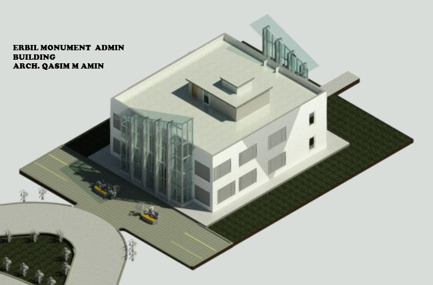

KANI ALMANI
These two buildings are an addition to the old project by Engineer Qasim, and there was an empty plot of land that was utilized for these two buildings.
ATLANTIC
These residential buildings are part of the Atlantic City project, which were designed entirely by Engineer Qasim.

PRIVATE HOUSE
It's a private house in Erbil.

Tourist House
It's a tourist house in Zearet Village.

Roman Future
This design (the open Roman theater) is part of an architectural competition for the design of the ecological park in Erbil.

Restaurant
This design of a restaurant is part of an architectural competition for the design of the ecological park in Erbil.

ADMIN MONUMENT
it's a adminisration building in erbil MONUMENT zone